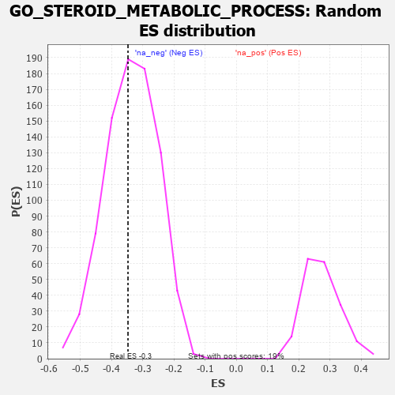

| | | Dataset | 7d |
| Phenotype | NoPhenotypeAvailable |
| Upregulated in class | na_neg |
| GeneSet | GO_STEROID_METABOLIC_PROCESS |
| Enrichment Score (ES) | -0.34680668 |
| Normalized Enrichment Score (NES) | -1.0336493 |
| Nominal p-value | 0.42874694 |
| FDR q-value | 0.8230639 |
| FWER p-Value | 1.0 |
Table: GSEA Results Summary
 Fig 1: Enrichment plot: GO_STEROID_METABOLIC_PROCESS
Fig 1: Enrichment plot: GO_STEROID_METABOLIC_PROCESS
Profile of the Running ES Score & Positions of GeneSet Members on the Rank Ordered List
| PROBE | GENE SYMBOL | GENE_TITLE | RANK IN GENE LIST | RANK METRIC SCORE | RUNNING ES | CORE ENRICHMENT | | 1 | DISP3 | | | 110 | 1.525 | 0.0549 | No |
| 2 | CLN8 | | | 769 | 0.539 | -0.0039 | No |
| 3 | G6PC | | | 1121 | 0.459 | -0.0274 | No |
| 4 | IDI1 | | | 1513 | 0.389 | -0.0593 | No |
| 5 | NFYB | | | 1543 | 0.384 | -0.0456 | No |
| 6 | NFYC | | | 1582 | 0.377 | -0.0334 | No |
| 7 | RXRA | | | 1647 | 0.365 | -0.0250 | No |
| 8 | LRP5 | | | 1769 | 0.342 | -0.0248 | No |
| 9 | SGPL1 | | | 1820 | 0.334 | -0.0161 | No |
| 10 | REST | | | 2308 | 0.259 | -0.0659 | No |
| 11 | LBR | | | 2395 | 0.246 | -0.0657 | No |
| 12 | RORA | | | 2730 | 0.193 | -0.0991 | No |
| 13 | ARV1 | | | 2827 | 0.179 | -0.1031 | No |
| 14 | CLN6 | | | 2847 | 0.177 | -0.0976 | No |
| 15 | WNT4 | | | 3023 | 0.146 | -0.1131 | No |
| 16 | PIAS4 | | | 3034 | 0.145 | -0.1078 | No |
| 17 | ACLY | | | 3149 | 0.130 | -0.1163 | No |
| 18 | SNX17 | | | 3272 | 0.110 | -0.1268 | No |
| 19 | MED1 | | | 3405 | 0.089 | -0.1394 | No |
| 20 | CNBP | | | 3728 | 0.037 | -0.1784 | No |
| 21 | DGKQ | | | 3856 | 0.020 | -0.1936 | No |
| 22 | DDX20 | | | 4083 | -0.021 | -0.2212 | No |
| 23 | NFYA | | | 4140 | -0.031 | -0.2268 | No |
| 24 | GFI1 | | | 4168 | -0.037 | -0.2286 | No |
| 25 | RAN | | | 4299 | -0.059 | -0.2423 | No |
| 26 | AMACR | | | 4338 | -0.066 | -0.2441 | No |
| 27 | ACADL | | | 4360 | -0.069 | -0.2436 | No |
| 28 | NPC2 | | | 4498 | -0.093 | -0.2567 | No |
| 29 | DHRS4 | | | 4851 | -0.168 | -0.2936 | No |
| 30 | CLCN2 | | | 5224 | -0.250 | -0.3293 | No |
| 31 | ACOT8 | | | 5364 | -0.288 | -0.3338 | Yes |
| 32 | ACOX2 | | | 5461 | -0.310 | -0.3320 | Yes |
| 33 | VDR | | | 5517 | -0.325 | -0.3243 | Yes |
| 34 | FGFR1 | | | 5543 | -0.332 | -0.3124 | Yes |
| 35 | G6PD | | | 5638 | -0.358 | -0.3082 | Yes |
| 36 | SOAT1 | | | 5657 | -0.363 | -0.2941 | Yes |
| 37 | ABCG1 | | | 5778 | -0.399 | -0.2912 | Yes |
| 38 | PMVK | | | 5792 | -0.403 | -0.2747 | Yes |
| 39 | PLPP6 | | | 5842 | -0.416 | -0.2621 | Yes |
| 40 | HINT2 | | | 5889 | -0.431 | -0.2484 | Yes |
| 41 | VLDLR | | | 5898 | -0.434 | -0.2299 | Yes |
| 42 | SCAP | | | 5986 | -0.466 | -0.2198 | Yes |
| 43 | GBA2 | | | 6136 | -0.515 | -0.2154 | Yes |
| 44 | EGR1 | | | 6165 | -0.527 | -0.1952 | Yes |
| 45 | NPC1 | | | 6364 | -0.602 | -0.1930 | Yes |
| 46 | ABCA2 | | | 6433 | -0.634 | -0.1730 | Yes |
| 47 | CUBN | | | 6624 | -0.727 | -0.1642 | Yes |
| 48 | CFTR | | | 7143 | -1.030 | -0.1832 | Yes |
| 49 | TSPO | | | 7194 | -1.065 | -0.1414 | Yes |
| 50 | ABCA1 | | | 7243 | -1.113 | -0.0973 | Yes |
| 51 | PANK2 | | | 7736 | -1.866 | -0.0752 | Yes |
| 52 | SP1 | | | 7840 | -2.321 | 0.0165 | Yes |
Table: GSEA details [plain text format]

Fig 2: GO_STEROID_METABOLIC_PROCESS: Random ES distribution
Gene set null distribution of ES for GO_STEROID_METABOLIC_PROCESS